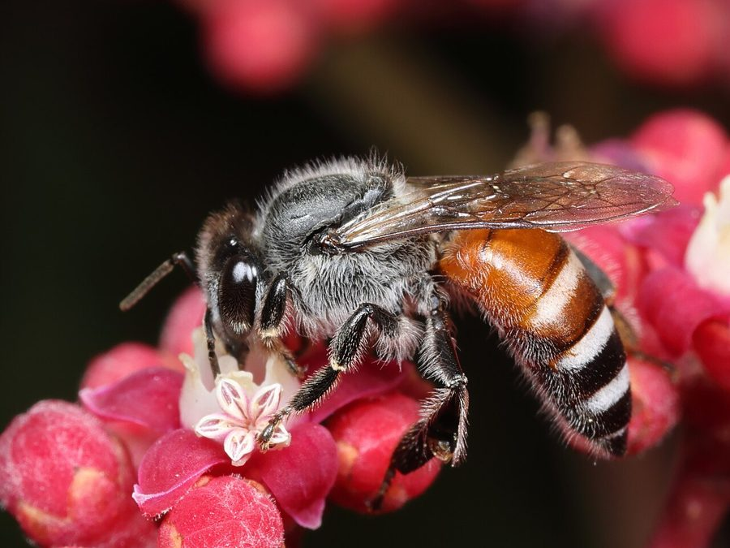

छोटी मधुमक्खीDwarf Honey Bee
Apis florea · Apidae · INS-0038

- Scientific name
- Apis florea Fabricius, 1787
- Family
- Apidae
- Hindi
- छोटी मधुमक्खी
- Status here
- native
- IUCN
- not evaluated
When to look कब देखें
Present all year.
छोटी मधुमक्खी / Dwarf Honey Bee
Apis florea Fabricius, 1787 — Apidae
छोटी मधुमक्खी (ड्वार्फ हनी बी) — पूर्वी उत्तर प्रदेश के खेतों, बागों और झाड़ियों में पाई जाने वाली एक बहुत ही छोटी, सामाजिक निवासी मधुमक्खी है। इसे स्थानीय बोलचाल में "पुतका" या "पुतकी" भी कहा जाता है। यह आकार में आम पालतू मधुमक्खियों से काफी छोटी होती है। इसकी सबसे बड़ी विशेषता यह है कि यह गुफाओं या डिब्बों के बंद कोनों के बजाय, खुली हवा में पेड़ की पतली टहनियों या कंटीली झाड़ियों पर अपना एक अकेला, छोटा और गोलाकार छत्ता (exposed single comb) बनाती है। यद्यपि इससे मिलने वाले शहद की मात्रा बहुत कम (fist-sized comb) होती है, लेकिन यह पूर्वी उत्तर प्रदेश की प्रमुख फसलों, फलों और सब्जियों के परागण (pollination) में एक अत्यंत महत्वपूर्ण भूमिका निभाती है। इसका स्वभाव बहुत शांत होता है और यह बहुत कम डंक मारती है।
Quick Identification त्वरित पहचान
| Feature | Description |
|---|---|
| Size | Very small bee; worker length 7–10 mm; queen length 12–14 mm |
| Colouration | Head and thorax black; first two segments of the abdomen are bright orange-red |
| Abdomen Pattern | Alternating black and white hair bands on the posterior abdominal segments |
| Wings | Small, transparent, with fine venation; folded flat over the back when resting |
| Comb | Single, small (fist-sized), exposed wax comb built around a thin twig or branch |
| Behaviour | Docile; crawls in dense sheets over the comb surface; flies with a soft hum |
Field tip: Look inside low garden hedges, wild berry bushes, or lower branches of guava trees. Search for a small, exposed, single-sheet comb (about the size of a human fist) wrapped around a thin twig. The upper part of the comb forms a flat platform where bees crawl actively.
Morphology आकारिकी
Biometrics (typical measurements for worker specimens in local mustard fields):
| Measurement | Range |
|---|---|
| Body length | 7.0–10.0 mm |
| Wing length | 6.0–7.5 mm |
Body details: The worker bee is tiny and slender. The head is broad with large compound eyes and simple ocelli. The thorax is black and covered in dense, greyish-white hairs. The abdomen is segmented and banded; the most diagnostic feature is the bright reddish-orange or orange-brown color of the first two abdominal segments, while the rest are black with bands of pale white hairs. The legs are brown with the hind legs modified to carry pollen (featuring a flat tibia with long hairs forming the corbicula or pollen basket). Queens are noticeably larger with a long abdomen, while drones (males) are stocky with very large, touching eyes.
Behaviour & Ecology व्यवहार और पारिस्थितिकी
Nesting and communication specialist.
- Exposed nests: Unlike cavity-nesting honey bees, this species builds its single comb in the open, suspended from a thin branch of a shrub or tree, usually within 1–4 metres of the ground.
- Horizontal communication: When signaling food sources, workers perform a waggle dance on the flat, horizontal wax platform at the top of the comb, pointing directly toward the food relative to the sun.
- Colony migration: Highly sensitive to weather and predators. If a site becomes too hot or is attacked by ants, the entire colony absconds, migrating a short distance to build a new comb.
Ecological Role पारिस्थितिक भूमिका
Primary wild pollinator.
- Crop pollination: Visits a wide array of agricultural crops, especially oilseeds, pulses, and vegetables, transferring pollen efficiently due to its high visitation rate.
- Wild plant reproduction: Reaches small, shallow, or tubular flowers that cannot accommodate larger bees, maintaining local weed and wildflower diversity.
Life Cycle / Phenology जीवन चक्र
- Colony organization: The colony consists of a single reproductive queen, thousands of sterile female workers, and a few hundred seasonal male drones.
- Development: The queen lays tiny eggs in hexagonal wax cells. The larvae hatch in 3 days, feeding on royal jelly and honey-pollen bread. They pupate inside capped wax cells, emerging as adults in 20–21 days.
- Swarming: Swarming occurs in spring (February–March) when food is abundant. The old queen departs with a swarm of workers to establish a new site, leaving a young queen to inherit the old comb.
Host Plants or Prey आहार
Foraging sources:
- Agricultural crops: Indian Mustard (Brassica juncea [FLR-0052 Indian Mustard]), Pigeon Pea (Cajanus cajan [FLR-0055 Pigeon Pea]), Mango (Mangifera indica [FLR-0011 Mango]), and coriander.
- Wild weeds: Ban Tulsi (Croton bonplandianus [FLR-0060 Ban Tulsi]) and wild composites.
Predators / Natural Enemies शत्रु
- Birds: Asian Green Bee-eaters (such as [BRD-0032 Asian Green Bee-eater]) hunt workers in flight.
- Insects: Oriental Hornets (Vespa orientalis) attack nests to capture larvae and adults.
- Ants: Swarms of weaver ants (such as [INS-0008 Weaver Ant] - check ID) raid nests, forcing bees to abscond.
Agricultural / Human Relevance कृषि प्रासंगिकता
Pollination ally and medicinal resource.
- Crop yield support: The presence of Apis florea in Basti agricultural margins is essential for stable yields of winter oilseeds and legumes.
- Ayurvedic honey: Wild honey combs are harvested in small quantities by villagers. This honey (local name: putka ka shehad) is highly prized in traditional medicine for treating coughs, throat infections, and burns.
- Coexistence: Extremely gentle; stings are very mild, causing minor temporary pain, and occur only if a bee is trapped or the comb is handled roughly.
Expected Locally स्थानीय रूप से अपेक्षित
Not a field record. Written from published accounts for eastern Uttar Pradesh. No confirmed local sighting yet — if you have seen it, that is what the atlas needs.
अभी तक स्थानीय पुष्टि नहीं। यह विवरण प्रकाशित स्रोतों से है, किसी अवलोकन से नहीं।
Commonly observed in Basti district blocks like Harraiya, Vikramjot, and Kaptanganj. Their fist-sized combs are frequently found in lemon orchards (nimbu ki bari), Bougainvillea hedges, and wild Ziziphus (ber) bushes near crop fields.
Distribution वितरण
Global range: Widespread in South and Southeast Asia, from Iran through India and Sri Lanka to China and Indonesia.
In India: Found throughout the plains and lower hills of all states.
In Uttar Pradesh: Abundant resident in all rural and agricultural districts.
In Basti district / eastern UP: Observed commonly in all blocks.
Research Questions शोध प्रश्न
Anyone can investigate these | कोई भी इन प्रश्नों की जाँच कर सकता है
- How does the nesting height of Dwarf Honey Bee combs vary between home gardens and open crop fields in Basti? / बस्ती में घरेलू बगीचों और खुले खेतों के बीच छोटी मधुमक्खी के छत्ते की ऊँचाई कैसे भिन्न होती है? — Measure nest heights in different environments.
- Does the presence of Dwarf Honey Bees increase the seed set percentage in adjacent mustard crops? / क्या छोटी मधुमक्खियों की उपस्थिति से समीपवर्ती सरसों की फसलों में बीजों के बनने (seed set) का प्रतिशत बढ़ता है? — Compare seed counts in plots with vs. without bee activity.
- What is the average distance traveled by worker bees when foraging on wild weeds? — Map flight paths of marked workers from a single comb.
- How do colonies behaviorally adjust their comb orientation to avoid direct afternoon sun? — Record comb angles relative to cardinal directions.
- Can children safely count how many honey bees visit a single flowering plant patch in 10 minutes? — A simple observational pollination study.
Similar Species मिलती-जुलती प्रजातियाँ
| Species | Key Difference | हिंदी |
|---|---|---|
| Apis cerana (Indian Honey Bee) | Larger (10–12 mm); nests in dark cavities or boxes; abdomen has yellow-black stripes without an orange base | भारतीय मधुमक्खी / मौन — बड़ा आकार, दरारों में छत्ता |
| Apis mellifera (European Honey Bee) | Much larger (12–15 mm); imported for commercial apiculture; nests in boxes | इटैलियन मधुमक्खी — बहुत बड़ी, कृत्रिम बक्से |
| Apis dorsata (Giant Honey Bee) | Very large (17–20 mm); builds huge exposed combs on high cliffs or tall structures | सारंग / डम्भर — विशाल आकार, अत्यंत आक्रामक |
Field rule: Tiny size (7–10 mm), black body with a bright orange-red base of the abdomen, and a small, exposed, single comb wrapped around a thin twig identify the Dwarf Honey Bee.
Taxonomy & Classification वर्गीकरण
Original description. Johan Christian Fabricius described the Dwarf Honey Bee as Apis florea in 1787 in Mantissa insectorum (Vol. 1, p. 305). The type locality was India. The genus name Apis is Latin for "bee". The specific name florea is Latin for "flowering" or "floral".
Subspecies. Monotypic in its regional range, though some geographical color morphs exist.
Family and order placement. Placed in the order Hymenoptera, suborder Apocrita, family Apidae (honey bees), subfamily Apinae.
Phylogenetic notes. Apis florea represents one of the most basal lineages of the genus Apis, retaining primitive nesting behaviors (exposed single combs) and horizontal dance communication.
IUCN status rationale. Not evaluated (NE) by the IUCN Red List. It is common and highly abundant, with no immediate conservation threats.
Photo Gallery फोटो गैलरी
References संदर्भ
- Fabricius, J. C. (1787). Mantissa insectorum sistens eorum species nuper detectas adiectis characteribus genericis, differentiis specificis, emendationibus, observationibus. Vol. 1. Hafniae: C. G. Proft, p. 305. [original description]
- Bingham, C. T. (1897). The Fauna of British India, including Ceylon and Burma. Hymenoptera. Vol. 1. Wasps and Bees. Taylor and Francis, London, p. 562.
- Mani, M. S. (1968). General Entomology. Oxford & IBH Publishing Co., New Delhi.
- Ruttner, F. (1988). Biogeography and Taxonomy of Honeybees. Springer-Verlag, Berlin.
- ZSI Checklist — Apidae of Uttar Pradesh (2015).
- GBIF Occurrence Data — Apis florea, Uttar Pradesh (2010–2025).
Source file: species/fauna/insects/dwarf_honey_bee.md